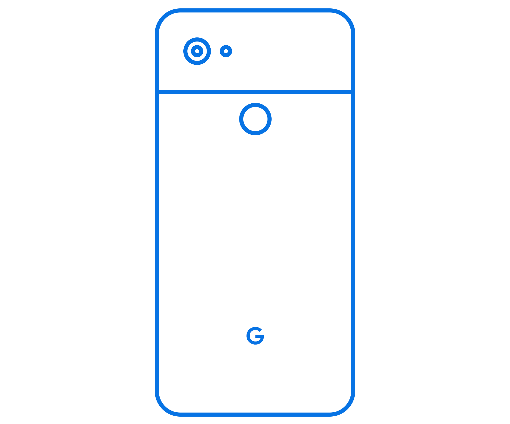
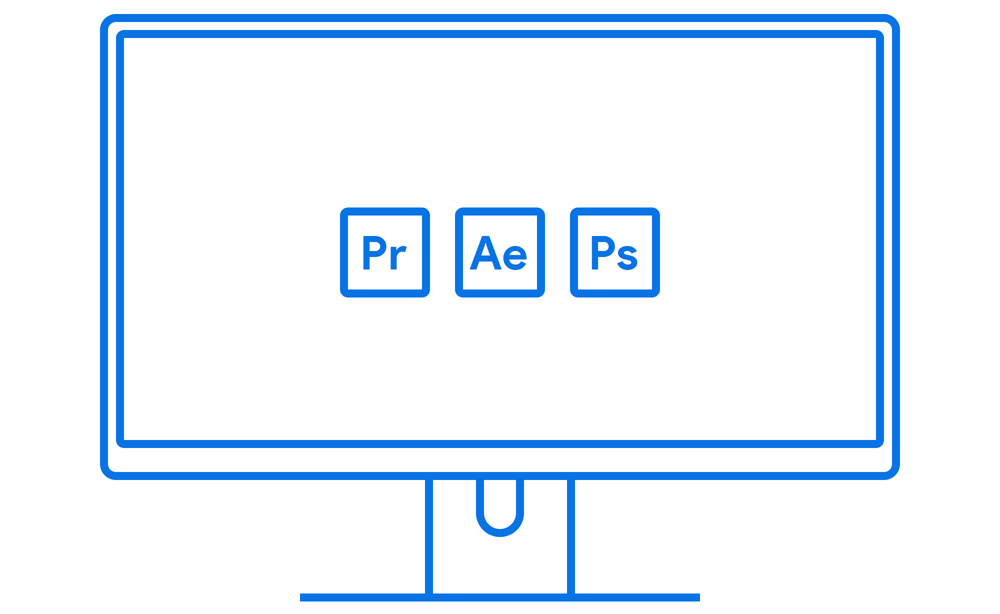

My name is Samson Zhang, I’m an 11th grader at Phillips Academy and I live in New York City. I'm constantly experimenting and learning new things. I love storytelling through filmmaking, photography, design, and code. I also love cycling, Rocket League, playing piano, and Isaac Asimov’s robot stories.
Here's a resume of my skills and the things I've done.
Camera: Sony A6500, Lens: Sony 35mm f/1.8
My only proper camera and its single lens. The A6500 delivers 4K30 and 1080P120 video from a sizeable APS-C sensor for good detail and low light, and really nice depth of field paired with the f/1.8 lens.
Phone: Google Pixel 2 XL
Pure Android, best-in-class camera, gorgeous design. Love this little slab of metal.
Editing Computer: Custom build / Adobe CC Suite
i5-5600, GTX1060 build in a Corsair Carbide 240 case. LG 27" 4K main monitor, Dell 25" 1440P secondary monitor. Coolermaster QuickFire Rapid keyboard, Logitech MX Master mouse, Bose Soundlink Mini 2 speaker.
A full, pretty overkill setup to churn through everything I need and more.